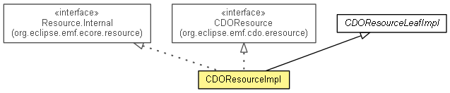

org.eclipse.emf.cdo.eresource.impl
Class CDOResourceImpl
java.lang.Object
 org.eclipse.emf.common.notify.impl.BasicNotifierImpl
org.eclipse.emf.ecore.impl.BasicEObjectImpl
org.eclipse.emf.ecore.impl.MinimalEObjectImpl
org.eclipse.emf.ecore.impl.MinimalEStoreEObjectImpl
org.eclipse.emf.internal.cdo.CDOObjectImpl
org.eclipse.emf.cdo.eresource.impl.CDOResourceNodeImpl
org.eclipse.emf.cdo.eresource.impl.CDOResourceLeafImpl
org.eclipse.emf.cdo.eresource.impl.CDOResourceImpl
org.eclipse.emf.common.notify.impl.BasicNotifierImpl
org.eclipse.emf.ecore.impl.BasicEObjectImpl
org.eclipse.emf.ecore.impl.MinimalEObjectImpl
org.eclipse.emf.ecore.impl.MinimalEStoreEObjectImpl
org.eclipse.emf.internal.cdo.CDOObjectImpl
org.eclipse.emf.cdo.eresource.impl.CDOResourceNodeImpl
org.eclipse.emf.cdo.eresource.impl.CDOResourceLeafImpl
org.eclipse.emf.cdo.eresource.impl.CDOResourceImpl
- All Implemented Interfaces:
- CDOObject, CDOWithID, CDOPackageTypeRegistry.CDOObjectMarker, CDOResource, CDOResourceLeaf, CDOResourceNode, Notifier, EObject, EStructuralFeature.Internal.DynamicValueHolder, InternalEObject, Resource, Resource.Internal, InternalCDOLoadable, InternalCDOObject, InternalCDOResource
- public class CDOResourceImpl
- extends CDOResourceLeafImpl
- implements InternalCDOResource

An implementation of the model object 'CDO Resource'.
- Generated
- Extends
- Resource.Internal
- No Extend
- This interface is not intended to be extended by clients.
The following features are implemented:
| Fields inherited from interface org.eclipse.emf.ecore.resource.Resource |
OPTION_CIPHER, OPTION_SAVE_ONLY_IF_CHANGED, OPTION_SAVE_ONLY_IF_CHANGED_FILE_BUFFER, OPTION_SAVE_ONLY_IF_CHANGED_MEMORY_BUFFER, OPTION_ZIP, RESOURCE__CONTENTS, RESOURCE__ERRORS, RESOURCE__IS_LOADED, RESOURCE__IS_MODIFIED, RESOURCE__IS_TRACKING_MODIFICATION, RESOURCE__RESOURCE_SET, RESOURCE__TIME_STAMP, RESOURCE__URI, RESOURCE__WARNINGS |
|
Method Summary |
void |
attached(EObject object)
|
NotificationChain |
basicSetResourceSet(ResourceSet resourceSet,
NotificationChain notifications)
|
void |
cdoInternalLoading(EObject object)
Informs the resource that an object contained within it is being loaded. |
void |
cdoInternalLoadingDone(EObject object)
Informs the resource that an object contained within it has finished being loaded. |
void |
cdoInternalPostDetach(boolean remote)
It is really important for accessing the data to go through CDOObjectImpl.cdoStore(). |
void |
cdoInternalPreLoad()
|
protected EList<?> |
createList(EStructuralFeature eStructuralFeature)
|
void |
delete(Map<?,?> options)
|
void |
detached(EObject object)
|
int |
eBaseStructuralFeatureID(int derivedFeatureID,
Class<?> baseClass)
|
int |
eDerivedStructuralFeatureID(int baseFeatureID,
Class<?> baseClass)
|
Resource.Internal |
eDirectResource()
|
protected EClass |
eStaticClass()
|
TreeIterator<EObject> |
getAllContents()
|
protected TreeIterator<EObject> |
getAllProperContents(List<EObject> contents)
|
EList<EObject> |
getContents()
|
EObject |
getEObject(String uriFragment)
Note: URI from temporary objects are going to changed when we commit the CDOTransaction. |
protected EObject |
getEObjectByID(String id)
Returns the object based on the fragment as an ID. |
EList<Resource.Diagnostic> |
getErrors()
|
Map<String,EObject> |
getIntrinsicIDToEObjectMap()
Returns the map used to cache the EObject that is identified by the value
of its ID feature. |
ResourceSet |
getResourceSet()
|
long |
getTimeStamp()
|
URI |
getURI()
|
String |
getURIFragment(EObject object)
|
URI |
getURIGen()
|
EList<Resource.Diagnostic> |
getWarnings()
|
boolean |
isExisting()
|
boolean |
isLoaded()
|
boolean |
isLoading()
|
boolean |
isModified()
|
boolean |
isRoot()
|
boolean |
isTrackingModification()
|
void |
load(InputStream inputStream,
Map<?,?> options)
|
void |
load(Map<?,?> options)
|
void |
save(Map<?,?> options)
|
void |
save(OutputStream outputStream,
Map<?,?> options)
|
protected void |
setExisting(boolean existing)
|
void |
setIntrinsicIDToEObjectMap(Map<String,EObject> intrinsicIDToEObjectMap)
Sets the map used to cache the EObject identified by the value of its ID feature. |
void |
setModified(boolean newModified)
|
void |
setResourceSet(ResourceSet newResourceSet)
|
void |
setRoot(boolean root)
|
void |
setTimeStamp(long newTimeStamp)
|
void |
setTrackingModification(boolean newTrackingModification)
|
void |
setTrackingModificationGen(boolean newTrackingModification)
|
void |
setURI(URI newURI)
|
void |
setURIGen(URI newURI)
|
void |
unload()
|
| Methods inherited from class org.eclipse.emf.cdo.eresource.impl.CDOResourceNodeImpl |
basicSetFolder, basicSetName, eStaticFeatureCount, getFolder, getName, getPath, setFolder, setFolderGen, setName, setNameGen, setPath |
| Methods inherited from class org.eclipse.emf.internal.cdo.CDOObjectImpl |
cdoClassInfo, cdoConflict, cdoDirectResource, cdoHistory, cdoID, cdoInternalDynamicFeature, cdoInternalInstance, cdoInternalPostAttach, cdoInternalPostInvalidate, cdoInternalPostLoad, cdoInternalPostRollback, cdoInternalPreCommit, cdoInternalSetID, cdoInternalSetResource, cdoInternalSetRevision, cdoInternalSetState, cdoInternalSetView, cdoInvalid, cdoLockState, cdoPrefetch, cdoReadLock, cdoReload, cdoResource, cdoRevision, cdoState, cdoView, cdoWriteLock, cdoWriteOption, createFeatureMap, createLock, createMap, createUnorderedList, dynamicGet, dynamicSet, dynamicUnset, eAdapterAdded, eAdapterRemoved, eBasicAdapterListeners, eBasicSetAdapterListeners, eBasicSetContainer, eBasicSetContainer, eBasicSetSettings, eBasicSettings, eClass, eContainerAdapterArray, eContainerFeatureID, eDynamicClass, eDynamicFeature, eDynamicFeatureID, eDynamicIsSet, eHasSettings, eInternalContainer, eInternalResource, eIsCaching, equals, eSetClass, eSetDirectResource, eSetResource, eSettings, eStore, getLockState, hashCode, instanceToRevisionFeature, revisionToInstanceFeature, toString |
| Methods inherited from class org.eclipse.emf.ecore.impl.MinimalEObjectImpl |
eAdapters, eBasicAdapterArray, eBasicAdapters, eBasicHasAdapters, eBasicProperties, eBasicSetContainer, eBasicSetContainerFeatureID, eContents, eCrossReferences, eDeliver, eIsProxy, eProperties, eProxyURI, eSetDeliver, eSetProxyURI |
| Methods inherited from class org.eclipse.emf.ecore.impl.BasicEObjectImpl |
eAddVirtualValue, eAllContents, eBasicRemoveFromContainer, eBasicRemoveFromContainerFeature, eComputeVirtualValuesCapacity, eContainer, eContainingFeature, eContainmentFeature, eContainmentFeature, eContains, eDerivedOperationID, eDerivedOperationID, eDynamicBasicRemoveFromContainer, eDynamicGet, eDynamicGet, eDynamicGet, eDynamicInverseAdd, eDynamicInverseAdd, eDynamicInverseRemove, eDynamicInverseRemove, eDynamicInvoke, eDynamicInvoke, eDynamicIsSet, eDynamicIsSet, eDynamicSet, eDynamicSet, eDynamicSet, eDynamicUnset, eDynamicUnset, eDynamicUnset, eGet, eGet, eGet, eGet, eInverseAdd, eInverseAdd, eInverseRemove, eInverseRemove, eInvocationDelegate, eInvoke, eInvoke, eIsSet, eIsSet, eObjectForURIFragmentSegment, eOpenGet, eOpenIsSet, eOpenSet, eOpenUnset, eRemoveVirtualValue, eResolveProxy, eResource, eSet, eSet, eSetStore, eSetting, eSettingDelegate, eSetVirtualIndexBits, eSetVirtualValue, eSetVirtualValues, eStaticOperationCount, eUnset, eUnset, eURIFragmentSegment, eVirtualBitCount, eVirtualGet, eVirtualGet, eVirtualIndex, eVirtualIndexBits, eVirtualIsSet, eVirtualSet, eVirtualUnset, eVirtualValue, eVirtualValues |
| Methods inherited from interface org.eclipse.emf.cdo.CDOObject |
cdoConflict, cdoDirectResource, cdoHistory, cdoID, cdoInvalid, cdoLockState, cdoPrefetch, cdoReadLock, cdoReload, cdoResource, cdoRevision, cdoState, cdoView, cdoWriteLock, cdoWriteOption |
| Methods inherited from interface org.eclipse.emf.ecore.EObject |
eAllContents, eClass, eContainer, eContainingFeature, eContainmentFeature, eContents, eCrossReferences, eGet, eGet, eInvoke, eIsProxy, eIsSet, eResource, eSet, eUnset |
| Methods inherited from interface org.eclipse.emf.ecore.InternalEObject |
eBasicRemoveFromContainer, eDerivedOperationID, eGet, eGet, eInverseAdd, eInverseRemove, eInvoke, eIsSet, eNotificationRequired, eObjectForURIFragmentSegment, eProxyURI, eResolveProxy, eSet, eSetProxyURI, eSetStore, eSetting, eUnset, eURIFragmentSegment |
CDOResourceImpl
public CDOResourceImpl(URI initialURI)
- Since:
- 2.0
- Added
CDOResourceImpl
protected CDOResourceImpl()
-
- Generated
eStaticClass
protected EClass eStaticClass()
-
- Overrides:
eStaticClass in class CDOResourceLeafImpl
- Generated
eDirectResource
public Resource.Internal eDirectResource()
-
- Specified by:
eDirectResource in interface InternalEObject- Overrides:
eDirectResource in class CDOObjectImpl
- Since:
- 2.0
- Generated
- NOT
eDerivedStructuralFeatureID
public int eDerivedStructuralFeatureID(int baseFeatureID,
Class<?> baseClass)
- Specified by:
eDerivedStructuralFeatureID in interface InternalEObject- Overrides:
eDerivedStructuralFeatureID in class BasicEObjectImpl
eBaseStructuralFeatureID
public int eBaseStructuralFeatureID(int derivedFeatureID,
Class<?> baseClass)
- Specified by:
eBaseStructuralFeatureID in interface InternalEObject- Overrides:
eBaseStructuralFeatureID in class BasicEObjectImpl
isRoot
public boolean isRoot()
- Specified by:
isRoot in interface CDOResourceNode
- Since:
- 2.0
setRoot
public void setRoot(boolean root)
- Since:
- 3.0
getResourceSet
public ResourceSet getResourceSet()
-
- Specified by:
getResourceSet in interface CDOResource- Specified by:
getResourceSet in interface Resource
- Returns:
- the value of the 'Resource Set' attribute.
- See Also:
CDOResource.setResourceSet(ResourceSet),
EresourcePackage.getCDOResource_ResourceSet()- Generated
setResourceSet
public void setResourceSet(ResourceSet newResourceSet)
-
- Specified by:
setResourceSet in interface CDOResource
- Parameters:
newResourceSet - the new value of the 'Resource Set' attribute.- See Also:
CDOResource.getResourceSet()- Generated
getURIGen
public URI getURIGen()
-
- Since:
- 2.0
- Generated
getURI
public URI getURI()
-
- Specified by:
getURI in interface CDOResource- Specified by:
getURI in interface CDOResourceNode- Specified by:
getURI in interface Resource- Overrides:
getURI in class CDOResourceNodeImpl
- Returns:
- the value of the 'URI' attribute.
- See Also:
CDOResource.setURI(URI),
EresourcePackage.getCDOResource_URI()- Generated
- NOT
setURIGen
public void setURIGen(URI newURI)
-
- Since:
- 2.0
- Generated
setURI
public void setURI(URI newURI)
-
- Specified by:
setURI in interface CDOResource- Specified by:
setURI in interface Resource
- Parameters:
newURI - the new value of the 'URI' attribute.- See Also:
CDOResource.getURI()- Generated
- NOT
getContents
public EList<EObject> getContents()
-
- Specified by:
getContents in interface CDOResource- Specified by:
getContents in interface Resource
- Returns:
- the value of the 'Contents' containment reference list.
- See Also:
EresourcePackage.getCDOResource_Contents()- Generated
- NOT
cdoInternalPostDetach
public void cdoInternalPostDetach(boolean remote)
- Description copied from class:
CDOObjectImpl
- It is really important for accessing the data to go through
CDOObjectImpl.cdoStore(). CDOObjectImpl.eStore() will redirect
you to the transient data.
- Specified by:
cdoInternalPostDetach in interface InternalCDOObject- Overrides:
cdoInternalPostDetach in class CDOObjectImpl
- Since:
- 2.0
isModified
public boolean isModified()
-
- Specified by:
isModified in interface CDOResource- Specified by:
isModified in interface Resource
- Returns:
- the value of the 'Modified' attribute.
- See Also:
CDOResource.setModified(boolean),
EresourcePackage.getCDOResource_Modified()- Generated
- NOT
setModified
public void setModified(boolean newModified)
-
- Specified by:
setModified in interface CDOResource- Specified by:
setModified in interface Resource
- Parameters:
newModified - the new value of the 'Modified' attribute.- See Also:
CDOResource.isModified()- Generated
- NOT
isLoaded
public boolean isLoaded()
-
- Specified by:
isLoaded in interface CDOResource- Specified by:
isLoaded in interface Resource
- Returns:
- the value of the 'Loaded' attribute.
- See Also:
EresourcePackage.getCDOResource_Loaded()- Generated
- NOT
isTrackingModification
public boolean isTrackingModification()
-
- Specified by:
isTrackingModification in interface CDOResource- Specified by:
isTrackingModification in interface Resource
- Returns:
- the value of the 'Tracking Modification' attribute.
- See Also:
CDOResource.setTrackingModification(boolean),
EresourcePackage.getCDOResource_TrackingModification()- Generated
setTrackingModificationGen
public void setTrackingModificationGen(boolean newTrackingModification)
-
- Since:
- 4.0
- Generated
setTrackingModification
public void setTrackingModification(boolean newTrackingModification)
-
- Specified by:
setTrackingModification in interface CDOResource- Specified by:
setTrackingModification in interface Resource
- Parameters:
newTrackingModification - the new value of the 'Tracking Modification' attribute.- See Also:
CDOResource.isTrackingModification()- Generated
- NOT
getErrors
public EList<Resource.Diagnostic> getErrors()
-
- Specified by:
getErrors in interface CDOResource- Specified by:
getErrors in interface Resource
- Returns:
- the value of the 'Errors' attribute list.
- See Also:
EresourcePackage.getCDOResource_Errors()- Generated
- NOT
getWarnings
public EList<Resource.Diagnostic> getWarnings()
-
- Specified by:
getWarnings in interface CDOResource- Specified by:
getWarnings in interface Resource
- Returns:
- the value of the 'Warnings' attribute list.
- See Also:
EresourcePackage.getCDOResource_Warnings()- Generated
- NOT
getTimeStamp
public long getTimeStamp()
-
- Specified by:
getTimeStamp in interface CDOResource- Specified by:
getTimeStamp in interface Resource
- Returns:
- the value of the 'Time Stamp' attribute.
- See Also:
CDOResource.setTimeStamp(long),
EresourcePackage.getCDOResource_TimeStamp()- Generated
setTimeStamp
public void setTimeStamp(long newTimeStamp)
-
- Specified by:
setTimeStamp in interface CDOResource- Specified by:
setTimeStamp in interface Resource
- Parameters:
newTimeStamp - the new value of the 'Time Stamp' attribute.- See Also:
CDOResource.getTimeStamp()- Generated
getAllContents
public TreeIterator<EObject> getAllContents()
- Specified by:
getAllContents in interface Resource
- See Also:
ResourceImpl.getAllContents()- Added
getEObject
public EObject getEObject(String uriFragment)
- Note: URI from temporary objects are going to changed when we commit the CDOTransaction. Objects will not be
accessible from their temporary URI once CDOTransaction is committed.
Note: This resource is not actually used to lookup the resulting object in CDO. Only the CDOView is used for
this lookup! This means that this resource can be used to resolve any fragment with a CDOID of the
associated CDOView.
- Specified by:
getEObject in interface Resource
- Added
getIntrinsicIDToEObjectMap
public Map<String,EObject> getIntrinsicIDToEObjectMap()
- Returns the map used to cache the EObject that is identified by the
value
of its ID feature.
- Returns:
- the map used to cache the EObject that is identified by the value of its ID feature.
- Since:
- 4.2
- See Also:
setIntrinsicIDToEObjectMap(java.util.Map)- Added
setIntrinsicIDToEObjectMap
public void setIntrinsicIDToEObjectMap(Map<String,EObject> intrinsicIDToEObjectMap)
- Sets the map used to cache the EObject identified by the value of its ID feature.
This cache is only activated if the map is not
null.
The map will be lazily loaded by the getEObjectByID method.
It is up to the client to clear the cache when it becomes invalid,
e.g., when the ID of a previously mapped EObject is changed.
- Parameters:
intrinsicIDToEObjectMap - the new map or null.- Since:
- 4.2
- See Also:
getIntrinsicIDToEObjectMap()- Added
getEObjectByID
protected EObject getEObjectByID(String id)
- Returns the object based on the fragment as an ID.
- Since:
- 4.2
- Added
getAllProperContents
protected TreeIterator<EObject> getAllProperContents(List<EObject> contents)
- Since:
- 4.2
- Added
getURIFragment
public String getURIFragment(EObject object)
- Specified by:
getURIFragment in interface Resource
- Added
isLoading
public boolean isLoading()
- Specified by:
isLoading in interface Resource.Internal
- Added
cdoInternalLoading
public void cdoInternalLoading(EObject object)
- Description copied from interface:
InternalCDOResource
- Informs the resource that an
object contained within it is being loaded.
- Specified by:
cdoInternalLoading in interface InternalCDOResource
- Since:
- 4.2
- Added
cdoInternalLoadingDone
public void cdoInternalLoadingDone(EObject object)
- Description copied from interface:
InternalCDOResource
- Informs the resource that an
object contained within it has finished being loaded.
- Specified by:
cdoInternalLoadingDone in interface InternalCDOResource
- Since:
- 4.2
- Added
cdoInternalPreLoad
public void cdoInternalPreLoad()
- Specified by:
cdoInternalPreLoad in interface InternalCDOLoadable- Overrides:
cdoInternalPreLoad in class CDOObjectImpl
- Since:
- 2.0
- Added
load
public void load(InputStream inputStream,
Map<?,?> options)
throws IOException
- Specified by:
load in interface Resource
- Throws:
IOException- Added
load
public void load(Map<?,?> options)
throws IOException
- Specified by:
load in interface Resource
- Throws:
IOException- Added
save
public void save(Map<?,?> options)
throws IOException
- Specified by:
save in interface Resource
- Throws:
IOException- Added
save
public void save(OutputStream outputStream,
Map<?,?> options)
throws IOException
- Specified by:
save in interface Resource
- Throws:
IOException- Added
unload
public void unload()
- Specified by:
unload in interface Resource
- Added
delete
public void delete(Map<?,?> options)
throws IOException
- Specified by:
delete in interface CDOResourceNode- Specified by:
delete in interface Resource
- Throws:
IOException- Added
attached
public void attached(EObject object)
- Specified by:
attached in interface Resource.Internal
- Added
detached
public void detached(EObject object)
- Specified by:
detached in interface Resource.Internal
- Added
basicSetResourceSet
public NotificationChain basicSetResourceSet(ResourceSet resourceSet,
NotificationChain notifications)
- Specified by:
basicSetResourceSet in interface Resource.Internal
- See Also:
ResourceImpl.basicSetResourceSet(ResourceSet, NotificationChain)- Added
isExisting
public boolean isExisting()
- Specified by:
isExisting in interface CDOResource
- Added
setExisting
protected void setExisting(boolean existing)
- Since:
- 3.0
- Added
createList
protected EList<?> createList(EStructuralFeature eStructuralFeature)
- Overrides:
createList in class CDOObjectImpl
- Added
Copyright (c) 2011, 2012 Eike Stepper (Berlin, Germany) and others.